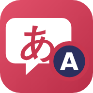

Casual Japanese Translator
Type it, say it or snap it. Pick how formal you want to sound.
Add your Claude API key to start
The app translates with Claude, using your own key. It's saved only on this phone.
Get a key at console.anthropic.com → API keys.
No key? , or pick Gemini or ChatGPT in Settings.
Basic mode gives one plain translation, so there's no casual or polite choice and no photos. Add an AI key in Settings to get them.
Verb chart
Japanese has two tenses: past and not past (now and future share one form). Each has a casual and a polite version. Pick a verb:
Osaka-ben and Kyoto-ben
Everyday words that change in Kansai. Osaka sounds lively and direct; Kyoto sounds softer and uses はる a lot.
Quick rules
Casual → polite: verbs swap their ending for ます; nouns and adjectives add です.
Particles like を and は are often dropped in casual talk and kept in polite talk.
Questions: polite adds か; casual just raises the voice, or ends in の？
Settings
Keys are stored only on this device and sent only to the service you picked.